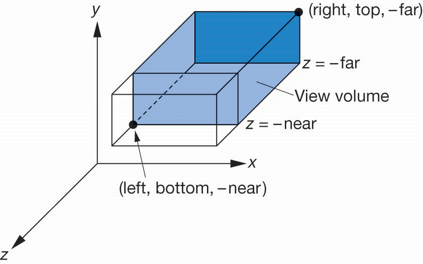
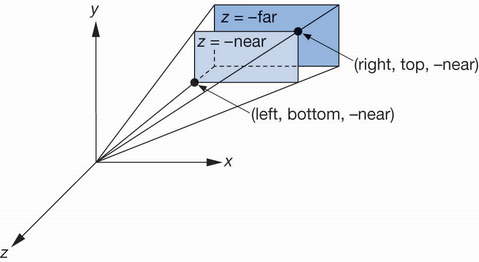
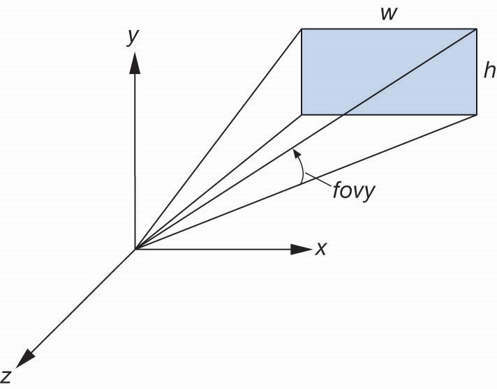

计算机图形学
第五章 成像
投影
投影
投影和归一化
- 相机默认投影为正投影
- 对位于成像空间中的点，有 $$ \begin{cases} x_p=x\\ y_p=y\\ z=0 \end{cases} $$
- 大部分图形系统采用成像归一化，即
- 将所有其它的投影成像通过变换将其变换到默认成像空间
- 可以对所有的成像应用同样的管线处理
投影
齐次坐标矩阵
正投影默认矩阵有:
$$
P_p=Mp\\
M=\begin{bmatrix}
1&0&0&0\\
0&1&0&0\\
0&0&0&0\\
0&0&0&1
\end{bmatrix}
$$
一般实现时，可令$M=I$，再将对应的z分量设置为0
投影
简单透视
投影中心为原点，投影平面位于$z=d,d<0$

投影
投影计算等式

从顶视图和侧视图中计算$x_p,y_p$的值，有 $$ x_p=\frac{x}{z/d}, y_p=\frac{y}{z/d}, z_p=d $$
投影
齐次坐标矩阵形式
同样构建投影矩阵$q=Mp$，其中有$x_p=\frac{x}{z/d}, y_p=\frac{y}{z/d}, z_p=d$，
$$
M=\begin{bmatrix}
1&0&0&0\\
0&1&0&0\\
0&0&1&0\\
0&0&1/d&0\\
\end{bmatrix}
$$
有
$$p=\begin{bmatrix}x\\y\\z\\1\end{bmatrix}, q=\begin{bmatrix}x\\y\\z\\z/d\end{bmatrix}$$
投影
透视因子
- 由于前面式中$q$中$w=z/d\neq 1$，为表达成规范的齐次坐标形式，需要将向量除以$w$
- 因此透视因子为$$x_p=\frac{x}{z/d}, y_p=\frac{y}{z/d}, z_p=d$$
投影
WebGL正投影成像函数
ortho(left, right, bottom, top, near, far)，其中near和far都指的相对相机的距离
投影
WebGL透视投影成像函数
frustuum(left, right, bottom, top, near, far)
投影
视域函数(FOV)
由于用frustum函数一般很难得到准确的成像视图，可选择函数perspective(fovy, aspect, near, far)，能够提供更好的视图构建形式，其中aspect=w/h